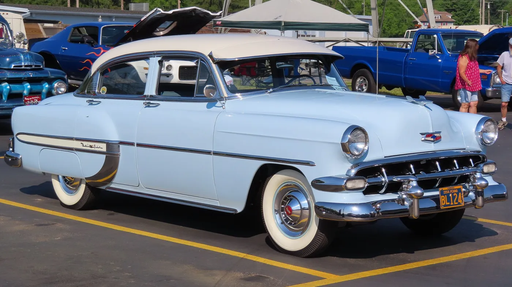
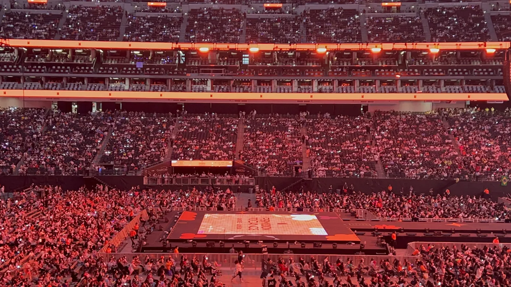
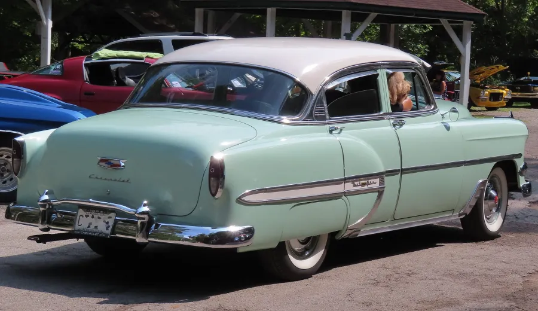
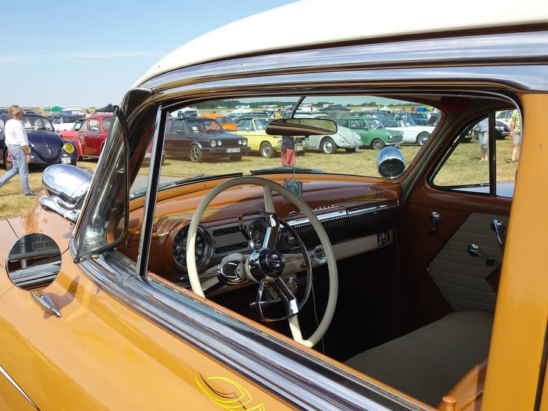
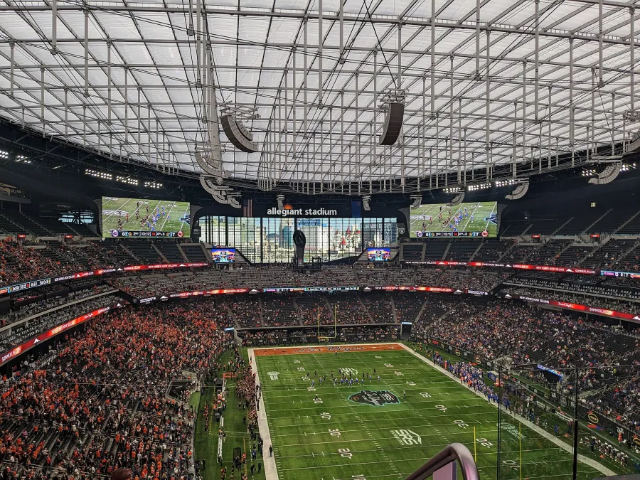
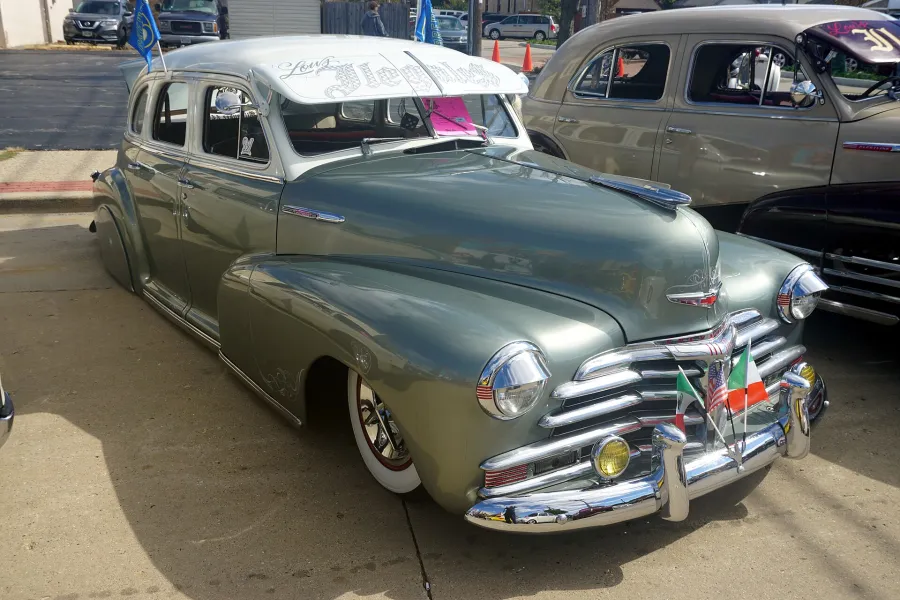

Ontario, California
John de los Reyes
Raider Nation for life. A 1954 Chevrolet Bel Air in the garage. Two loyalties, one guy from the Inland Empire.
About John
Two passions, one garage
John de los Reyes lives in Ontario, California, where he splits his weekends between wrenching on a piece of Detroit history and cheering on the Silver and Black. Whether it's a car show at the Ontario Mills lot or a tailgate before kickoff, John's the guy who'll happily talk your ear off about torque specs and third-down conversion rates.
The Garage
1954 Chevrolet Bel Air
The Bel Air was Chevrolet's top-of-the-line trim for the 1954 model year, the final season of the "Second Series" body before the all-new 1955 Chevy line-up arrived. John's example carries that classic early-'50s styling: the wide chrome grille, one-piece curved windshield, and the wraparound "Sweep-Sight" rear glass that made the '54 feel modern for its day.
Spec sheet
- Year
- 1954
- Make
- Chevrolet
- Model
- Bel Air
- Owner
- John de los Reyes
- Home base
- Ontario, CA
- Status
- Daily driven pride and joy
Details on the build, engine, and restoration story go here. Drop in the real history
whenever you're ready — this whole card is easy to edit in index.html.

Raider Nation
Silver and Black, through and through
John has been Raider Nation for as long as he can remember — through Los Angeles, Oakland, and now Las Vegas. Sundays mean silver and black, and there's nothing quite like Allegiant Stadium on gameday. Commitment to the shield.
- Team Las Vegas Raiders
- Colors Silver and Black
- Home turf Allegiant Stadium, Las Vegas
- Gameday ritual Add John's gameday tradition here

Gallery
Car shows & game days
A few spots reserved for photos — the Bel Air out cruising, John at Allegiant, anything worth showing off.




Get in touch
Let's talk cars or football
Add John's email or social links here so people can reach out.